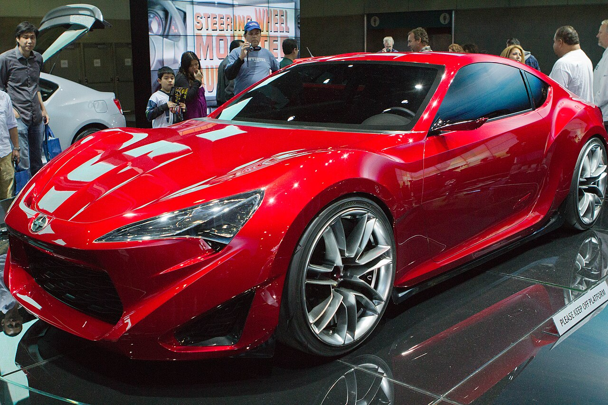
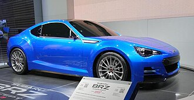
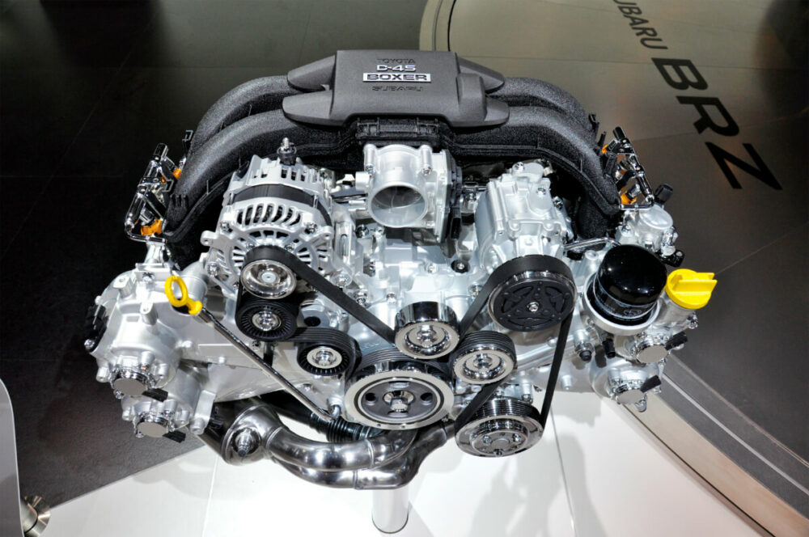
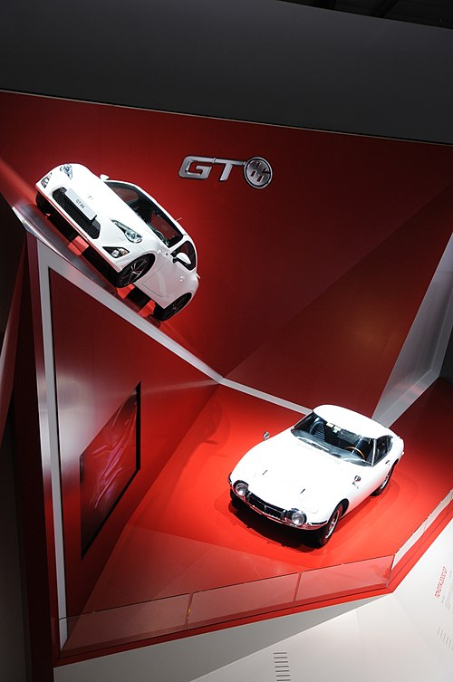
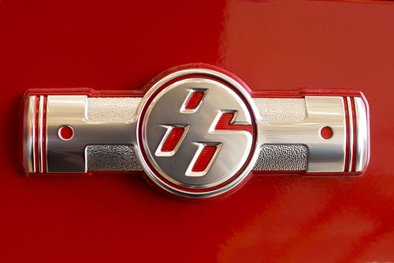
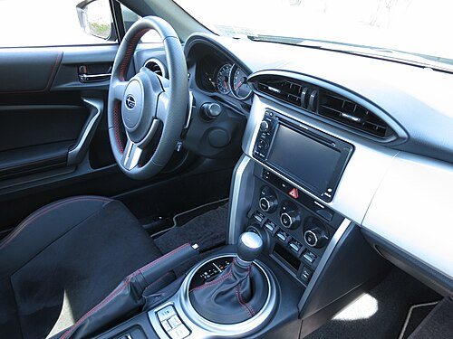
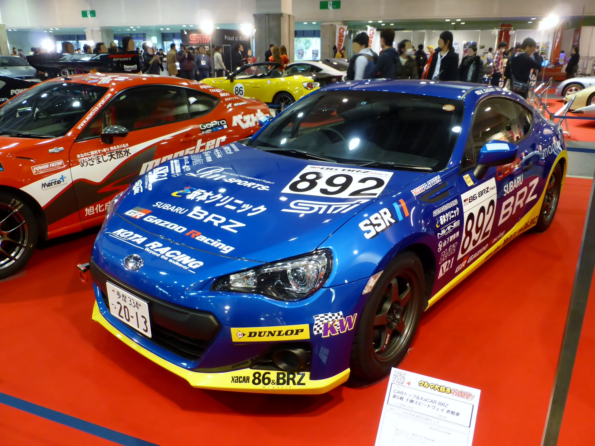
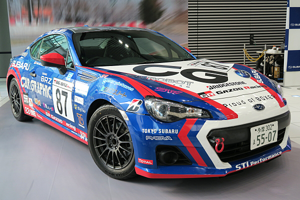

Back to main

Subaru BRZ — компактный заднеприводный спорткар в кузове двухдверного купе, разработанное и производимое совместно компаниями Subaru и Toyota, официально представлено в декабре 2011 года на Токийском автосалоне. BRZ — это аббревиатура Boxer, Rear Wheel Drive, Zenith. Модель продаётся под тремя разными брендами: Toyota (Toyota 86 в Японии, Австралии, Северной Америке и Северной Африке, Toyota GT-86 в Европе, Toyota FT-86 в Никарагуа и Ямайке), Subaru (Subaru BRZ) и Scion (Scion FR-S). Автомобиль официально продавался в России до 2015 года.
Содержание
Развитие кода 086A этого автомобиля и его основного названия 86 (произносится как восемь-шесть или хати-року (яп. ハチロク), но чаще произносится как восемьдесят шесть) или GT86, отсылает к историческим спортивным купе и хетчбэкам Toyota с передним расположением двигателя и задним приводом, а именно:
Toyota также ссылается на свой первый спортивный автомобиль, Sports 800, учитывая, что оба этих автомобиля имеют оппозитный двигатель, как широко используемый партнёром по проекту и производителем 86, Subaru.
Первоначальный макет и элементы дизайна для 86 были представлены компанией Toyota под своей «FT» (англ. Future Toyota) номенклатурой концепт-каров. Первой была представлена Toyota FT-HS на Детройтском автосалоне в 2007 году. Автомобиль имел переднее расположение двигателя, задний привод и был оснащён двигателем V6 и электродвигателем. В 2008 году Toyota купила 16,5 % Fuji Heavy Industries, которая включает в себя автомобильный бренд Subaru. Toyota, во главе с руководителем проекта Тецуя Тада, предложили Subaru принять участие в своём новом проекте спортивного купе, разрабатывая совместно новый оппозитный двигатель D-4S, однако, от него было решено отказаться, поскольку конструкция вступает в противоречие с репутацией Subaru, выпускающей мощные полноприводные автомобили. Это обстоятельство остановило проект на шесть месяцев до того, как Toyota пригласила журналистов и инженеров Subaru протестировать опытный образец. После испытаний, Subaru решила более активно участвовать в разработке.

Таким образом, новое сотрудничество создало новый концепт-кар, FT-86, представленный на Токийском автосалоне в октябре 2009 года. Будучи компактней, чем FT-HS, дизайн FT-86 был усовершенствован дизайн-студией ED2 компании Toyota, в то время как гибридная силовая установка V6 была заменена на новый оппозит D-4S. Subaru представила шасси и коробку передач, адаптированную от своей Impreza. Концепт был окрашен в цвет Shoujyouhi Red, в названии которого сообщалось, что он основываются заде японского макака.
В 2010 году на Токийском автосалоне, компания Toyota запустила свою спортивную линию G Sports, вместе с концептом FT-86 G Sports. Он получил карбоновые панели от G Sports, вентилируемый капот, антикрыло, 19-дюймовые колеса, гоночные сидения Recaro и внутренний каркас. Двигатель D-4S также получил турбонаддув.
В 2011 году Toyota и Subaru представили пять предпроизводственных концептов, чтобы показать их прогресс с проектом. Первый, известный как FT-86 II Concept, был представлен на Женевском автосалоне в марте 2011 года. Изысканный дизайн от ED2 первоначального FT-86, получил также новые передние и задние панели, незначительно увеличившие габариты концепта. На том же автосалоне Subaru также представила прозрачный силуэт автомобиля с новым оппозитным двигателем D-4S, отображаемый как "Архитектура оппозитного спортивного автомобиля " (англ. Boxer Sports Car Architecture).
Scion в апреле 2011 года на Нью-Йоркском автосалоне представил концепт спортивного купе FR-S Sports Coupé Concept. Ещё один полу-прозрачный концепт Subaru, известный как BRZ Prologue, был показан на Франкфуртском автосалоне в сентябре, а в ноябре на автосалоне в Лос-Анджелесе концепт BRZ Concept STi, в первая полноценная модель Subaru-версии 86 с участием Subaru Tecnica International (STI).

Scion FR-S Sports Coupé

Subaru BRZ STi Concept
Первая выпущенная Toyota 86 была представлена в 2011 году на Токийском автосалоне. Все варианты выпускает завод Gunma Main, принадлежащий Subaru, с первого автомобиля, собранного 2 февраля, после начала продаж в марте, и начала поставок в апреле. В первый же месяц было оформлено 7 000 заказов на Toyota 86 и 3 500 заказов для Subaru.
В США были доступны 10 000 единиц моделей 2013 модельного года (MY13) производства Scion, и всего 6 000 моделей Subaru.
Технические характеристики
Двигатель, известный как Toyota 4U-GSE или Subaru FA20, это атмосферный двигатель с четырьмя цилиндрами, который использует блок горизонтально-оппозитного двигателя Subaru, с добавлением головки блока и системы впрыска D-4S разработки Toyota. Таким образом, 86 имеет переднемоторную и заднеприводную компоновку. Двигатель работает на 98 бензине и имеет степень сжатия 12,5:1, диаметр и ход поршня равны и составляют по 86 мм, мощность двигателя 200 л.с. (149 кВт) при 7000 об/мин и крутящий момент 205 Нм при 6000 об/мин. Автомобиль имеет алюминиевый капот, а также прочную крышу, и багажник, в отличие от хетчбэка. Оппозитный двигатель с коробкой располагаются максимально далеко и низко в моторном отсеке для распределения веса в 53 % на переднюю ось и 47 % на заднюю. Низкая установка двигателя, а также посадка водителя и пассажира, обеспечивают более низкий центр тяжести, составляющий 460 мм.

Двигатель Toyota 4U-GSE / Subaru FA20
Автомобили оснащаются двумя шести-ступенчатыми механической и автоматической трансмиссиями, а также Самоблокирующийся дифференциал, входящим в стандартную комплектацию большинства моделей. Конкретно, используется механическая коробка Toyota TL70 (на базе Aisin AI AZ6) и Aisin-Warner A960E, модифицированная версия коробки, использовавшейся на Lexus IS 250. Автоматическая коробка передач использует три различных режима: спорт, снег и обычный. Подвеска независимая, спереди MacPherson, сзади с двойными А-образными рычагами. Автомобиль оснащается электро-усилителем руля и рядом систем, таких как антиблокировочная система ABS, усилитель экстренного торможения BAS, антипробуксовочная система TRC, Система курсовой устойчивости VSC с двумя режимами.
Автомобили, в зависимости от рынка, предлагаются с 16-дюймовыми стальными и легкосплавными дисками и шинами Yokohama dB Decibel E70 размера 205/55, либо с 17-дюймовыми легкосплавными дисками и шинами Michelin Primacy HP (как на Toyota Prius) размера 215/45. Ограниченными сериями TRD выпускала модель GT86, оснащённую 18-дюймовыми коваными и легкосплавными колёсными дисками, с шинами либо Yokohama Advan Sport, либо Michelin Pilot Sport 3 размеров 225/40, также в зависимости от рынка. На GT-86 в комплектации «элеганс» можно получить дифференциал LSD.
Дизайн

GT86 на Женевском автосалоне в 2012 году, с автомобилем 2000GT, который оказал влияние на его стиль
86 разрабатывалась вокруг своего оппозитного двигателя и конфигурации с задним приводом, вдохновляясь от AE86. Плоская форма оппозитного двигателя позволяет ему быть установленным достаточно низко, опуская при этом центр тяжести вниз, в результате чего увеличиваются его спортивные характеристики управляемости. Внешний дизайн 86 обеспечивает коэффициент аэродинамического сопротивления равный Сх=0,27.
По словам дизайнеров, «целью было создание подлинного заднеприводного спортивного автомобиля с убедительным стилем, исключительно сбалансированным, мощным и управляемым … и удивительно экономичным». Относительно TRD версии автомобиля, ведущий инженер Тада говорил: «в линии определенно появится TRD-ориентированный вариант, однако ни одна из деталей, которая будет стандартной для модели TRD, подойдет и на текущую Toyota 86, поэтому нет необходимости ждать».
Боковой шильдик 86 «boxer» появляется на всех версиях автомобилей Toyota и Scion, но не на Subaru BRZ. Помимо идентификационных знаков, основные различия между 86/GT86 и BRZ составляют передние решётки и бампера. В остальном, включая 17-дюймовые легкосплавные колеса, отличий нет.
Для представления идентичности, автомобиль также характеризуется символическими отсылками и различными мотивами, связанными с числом 86 и наследием Toyota:

Интерьер

Интерьер имеет конфигурацию сидений 2+2. Задние сиденья складываются, что позволит увеличить пространство для перевозки крупного багажа. Существует три варианта интерьера, FR-S и базовая модель 86 имеют чёрный салон и тканевые сиденья с красной строчкой. Для BRZ доступно два варианта отделки, один идентичен FR-S, но с серебряной отделкой торпедо, прошитым красной строчкой чехлом стояночного тормоза, чёрными циферблатами приборов (вместо белого тахометра от моделей 86 GTS), сенсорного экрана и навигацией головного устройства; второй вариант имеет кожаные сиденья и алькантаровый салон, подогрев сидений, автоматический блок управления системой HVAC, а также кнопку запуска. Некоторые 86 модели оснащались подобно BRZ, кроме описанных выше, и японский интерьер был доступен с чёрными или красными кожаными сиденьями и алькантаровым салоном, либо полностью чёрные кожаные сидения и алькантаровый салон (в Австралии доступен только последний вариант).
Показатели


В 2011 году, с появлением Super BRZ Concept STi, Subaru также представила свою Super GT серию, GT300. R&D Sport занимался развитием BRZ GT300, который пришёл на смену Legacy в гоночном сезоне 2012 года. BRZ GT300 не использует штатный двигатель FA20, вместо него устанавливается двигатель EJ20. Toyota, в партнёрстве с Gazoo Racing, представила планы разработки 86 для использования в нескольких дисциплинах автоспорта. Toyota и Gazoo поддерживали команды на соревнованиях Super Taikyu Endurance Series и All-Japan Rally Championship. Gazoo Racing с автомобилем 86 на гонках 24 часа Нюрбургринга выиграла в классе SP3 в 2012 году. Команда Toyota Swiss Racing участвовала в категории V3 в том же году. В Великобритании, GPRM разработала турбованную версию 86 для классификации в группе SRO категории GT4 для участия в гонках Европы. Разработкой двигателей занималась компания Nicholson McLaren Engines. В США Кен Гуши использовал GPP Scion Racing FR-S, построенный GReddy Racing для американского чемпионата Formula Drift. FR-S оснащался турбованным оппозитным двигателем EJ25 от Subaru WRX STI мощностью более 600 л.с. (450 кВт). Райан Терк пилотировал Scion FR-S с двигателем 2JZ-GTE мощностью более 700 л.с. (520 кВт) на американском чемпионате Formula Drift в 2013 году. Также в 2013 году, FR-S сменил Scion tC для Toyota Pro/Celebrity Race на гран-при Лонг-Бич. Во всех случаях, конкурентами FR-S были стандартные автомобили, доработанные для гонок в плане безопасности и надёжности. 86 модель участвовала в 2013 году на соревнованиях Pikes Peak Hill Climb.
86 Racing / BRZ RA Racing

В октябре 2012 года, Toyota Racing Development и Gazoo Racing анонсировали производство гоночной модели Toyota 86. Гоночная 86 Racing получила новые тормоза и масляный кулер, а также четырёх-точечные ремни и каркас безопасности. Заводские колеса были заменены на простые стальные диски, в то время как внешний цвет остался только белым. Subaru следом, в начале 2013 года, выпустила BRZ RA Racing в подобной модификации. Оба автомобиля были доступны только на японском рынке. В отличие от Toyota, BRZ выпускалась в любом из цветов основного автомобиля.
Австралийская серия 86 Pro-Am

В феврале 2015 года Toyota Australia анонсировала серию Pro-Am, созданную исключительно для участия в австралийских гонках V8 Supercars, начиная с 2016 года. Его пилотом стал Нил Бейтс. Гоночные автомобили оснащались различными механическими регулировками (например, управление двигателем, выхлопом, подвеска, тормоза, масляный радиатор, колеса и шины), которые обеспечивают надёжность, не ведя за собой дополнительных затрат.
В Европе GT86 были присуждены следующие награды в 2012 году:
В Австралии GT86 были присуждены следующие награды в 2012 году:
Другие награды:
Subaru BRZ также получил награды:
В дополнение, оппозитный двигатель Toyota-Subaru D-4S назван одним из 10 лучших двигателей по версии журнала Ward’s AutoWorld в 2013 году.